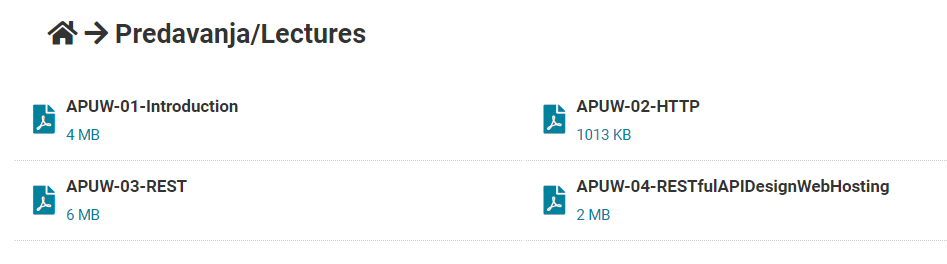

Jel imaju kakva snimljena predavanja, zna li se sta?
Je li što spomenuto o prvom labosu? Upute za njega su postavljene na materijale
jel postoje stari ispiti iz ovog?
cile Mislim da ovo https://github.com/studosi-fer/RZNU/tree/master/ispiti
Kak se uci za ovaj ispit?
Ovo sve ulazi u mi? 
Sicsile da
Ima li netko snimljena predavanja od prošle godine ako ih je bilo?
Je li zna netko jesu li ispiti na zaukruzivanje, dopunjavanje, recitiranje definicija ili nesto skroz trece?
Kako učit ovo i šta učit?
dinoo Ako netko ima neki bolji prijedlog neka javi
Ali trenutno mi se čini da je najbolje proći par riješenih starih ispita koje imaš na githubu pod predmetom RZNU (tako se predmet zvao na fer2)
https://github.com/studosi-fer/RZNU/tree/master/ispiti
I naravno, prođeš prezentacije
vandal S ovog linka Ellie , 2019./2020. RZNU MI
Netko zna jel nam ovi termini za prvi labos u kalendaru vrijede?
Ellie Vrijede, piše u uputi za prvi labos da se predaje u terminu koji nam je u kalendaru.
Ellie Koji tjedan su termini ? (ja nemam u rasporedu toga)
Smolaa meni je onaj tjedan od 13.12.
“Ako je sustav skalabilan i sa 100 jedinica obrađuje 2000 procesa, koliko će procesa obrađivati s dodatnih 50 jedinica?”
Samo da potvrdim ono što piše u pdf-u, je li točan odgovor 3000?
MGJ rekao bih da je
MGJ cini se logicno, iako je sumnjivo jednostavno
A je li netko provjerio 13. zadatak (onaj s računanjem cache hit rate, byte cache hit rate…) iz istog pdf-a? Je li sve tocno?